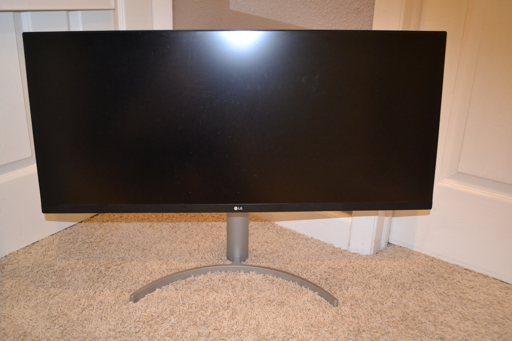
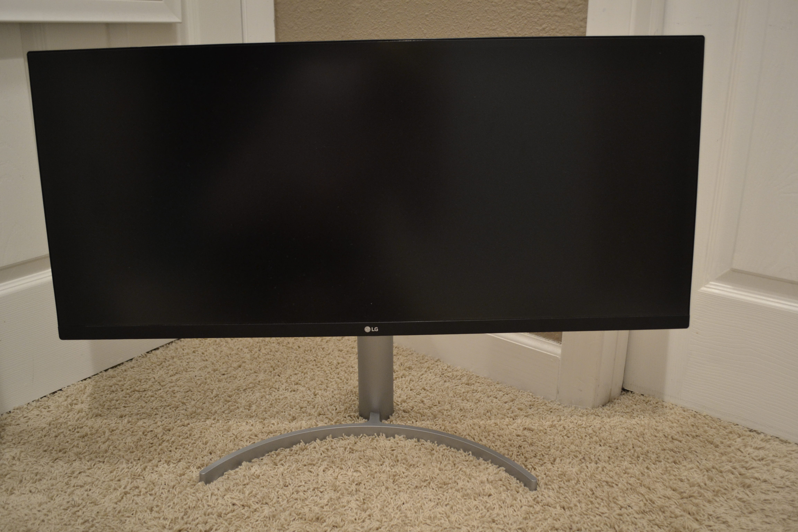
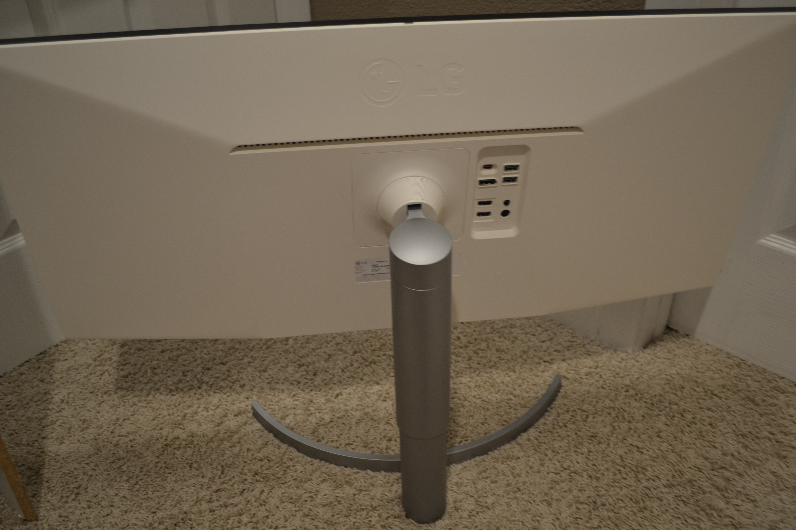
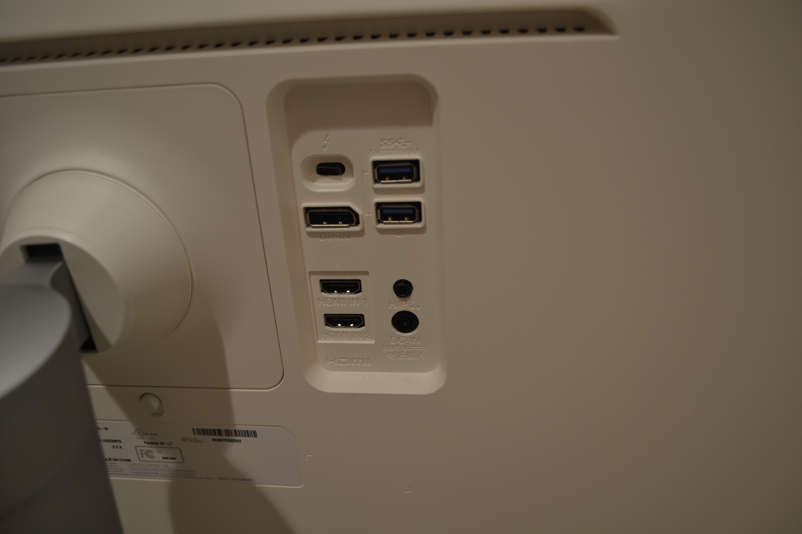
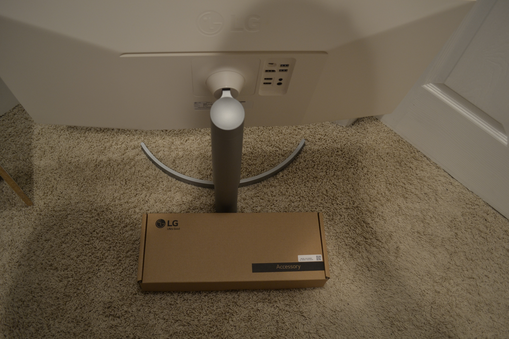
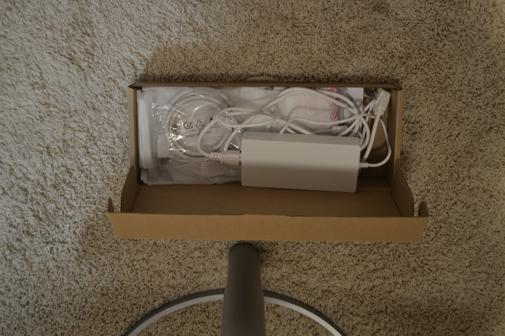

Ultrawide Monitor:
Disclosure Some links on this page are affiliate links. If you buy through them, Owen Miner may earn a commission at no extra cost to you. That support helps fund content on this website and social media. As an Amazon Associate I earn from qualifying purchases.
LG 34WL850 | $699.00

Resolution: 3440x1440p
Refresh Rate: 60hz
Having an ultrawide monitor is amazing for productivity. Coding, editing videos, and using Photoshop are all much better with the extra screen real estate. Watching movies is also really enjoyable, as many movies with black bars can be stretched to take up the entire monitor. At the time when I purchased it, it was quite expensive, but it was the only ultrawide I could find that could receive a display signal via USB-C and had two USB-3 connectors to work as a USB hub for my laptop. Although I no longer use a laptop as my main computer, this monitor still comes in handy anytime I am not playing video games.
Archive photos
Older pictures from the LG Ultra Wide folder, same 34-inch panel in an earlier desk era.





